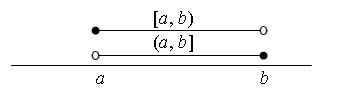
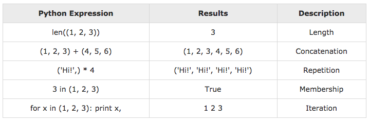
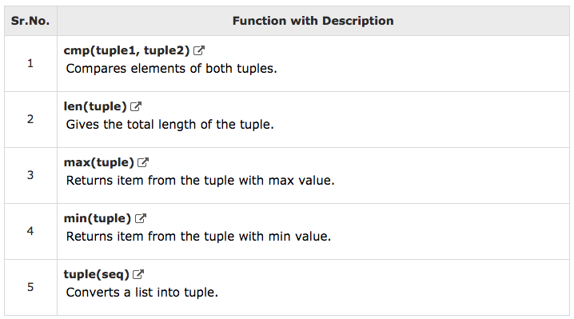
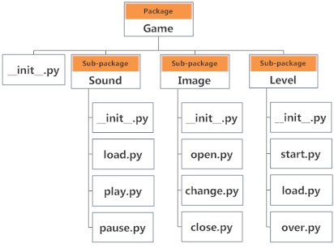

Basic Python3
by sawangpong
hello world
ภาษาpython สามารถทำงานได้ทันทีโดยไม่ต้องมีการ compile ยกตัวอย่างการใช้งานคำสั่ง print() เพื่อส่งข้อความออกแสดงผลทางหน้าจอ
$ python3
Python 3.6.3 (default, Oct 3 2017, 21:45:48)
[GCC 7.2.0] on linux
Type "help", "copyright", "credits" or "license" for more information.
>>> print("hello world")
hello world
>>>
คำสั่ง dir, help
string = "string"
dir(string)
help(string.count)
comment
การ comment จะทำให้ python ไม่ทำการประมวลผลบรรทัดดังกล่าว ด้วย
# comment
indentation
เนื่องจากภาษาไพทอน ไม่มีการใช้ {} เพื่อแสดง code block แต่จะมีการใช้ ย่อหน้า indentation โดยทั่วไปจะตั้งไว้ 4 spaces
x = 1
if x == 1:
# indented four spaces
print("x is 1.")
หลักการของ Mutable vs Immutable
- Mutable เราสามารถเปลี่ยนแปลง object ได้โดยที่ ไม่ต้องมีการเปลี่ยนค่า id
- Immutable เราไม่สามารถเปลี่ยน object โดยที่ไม่เปลี่ยน id ดังนั้นเมื่อมีการเปลี่ยน object id จะเปลี่ยนด้วย
# Immutable
myval = "python"
id(myval)
myval = "love python"
id(myval)
# Mutable
mylist = []
id(mylist)
mylist.append("hello")
id(mylist)
Variables and Types
ภาษาpython เป็นภาษาเชิง object oriented และเป็น Dynamic Type โดยไม่จำเป็นต้องมีการประกาศชนิดของตัวแปรเอาไว้ก่อน เพราะทุกๆ ตัวแปรของ python เป็น object
Integer
myint = 7
print(myint)
floating
myfloat = 7.0
print(myfloat)
myfloat = float(7)
print(myfloat)
String
กำหนดด้วย “”, ‘’
mystring = 'hello'
print(mystring)
mystring = "hello"
print(mystring)
operator +
one = 1
two = 2
three = one + two
print(three)
hello = "hello"
world = "world"
helloworld = hello + " " + world
print(helloworld)
assignment
การใช้การ assignment สามารถใช้งาน กำหนดได้มากกว่าครั้งละ 1 ตัวแปร และจะใช้ตำแหน่งในการกำหนดค่า
a, b = 3, 4
print(a,b)
Exercise
ให้ลองตั้งค่าตัวแปรเพื่อให้โปรแกรมทำงานอย่างถูกต้อง
# change this code
mystring = None
myfloat = None
myint = None
# testing code
if mystring == "hello":
print("String: %s" % mystring)
if isinstance(myfloat, float) and myfloat == 10.0:
print("Float: %f" % myfloat)
if isinstance(myint, int) and myint == 20:
print("Integer: %d" % myint)
Lists
Lists มีลักษณะคล้ายกับ array สามารถที่จะเก็บค่าตัวแปรชนิดใดก็ได้ และมีขนาดไม่จำกัด สามารถที่นำ Lists มาวนลูปดีงค่าได้
mylist = []
mylist.append(1)
mylist.append(2)
mylist.append(3)
print(mylist[0]) # prints 1
print(mylist[1]) # prints 2
print(mylist[2]) # prints 3
# prints out 1,2,3
for x in mylist:
print(x)
แต่หากมีการอ้างอิงตำแหน่งที่เกินขอบเขตก็จะสร้าง exception
mylist = [1,2,3]
print(mylist[10])
print(len(mylist))
Exercise
เพิ่มตัวแปรใน lists ของตัวแปร numbers, strings ด้วยคำสั่ง append
numbers = []
strings = []
names = ["John", "Eric", "Jessica"]
# add numbers, strings
second_name = names[1]
print(numbers)
print(strings)
print("The second name on the names list is %s" % second_name)
ตัวดำเนินการทางคณิตศาตร์
เหมือนกับภาษาคอมพิวเตอร์อื่นที่สามารถรองรับการคำนวนทางด้านคณิตศาสตร์ เช่น addition, substraction, multiplication, division
number = 1 + 2 * 3 / 4.0
print(number)
remainder = 11 % 3
print(remainder)
squared = 7 ** 2
cubed = 2 ** 3
print(squared)
print(cubed)
String
ตัวดำเนินการทาง strings
helloworld = "hello" + " " + "world"
print(helloworld)
lotsofhellos = "hello" * 10
print(lotsofhellos)
ตัวดำเนินการทาง Lists
even_numbers = [2,4,6,8]
odd_numbers = [1,3,5,7]
all_numbers = odd_numbers + even_numbers
print(all_numbers)
print([1,2,3] * 3)
Exercise
- สร้างตัวแปร x_list จาก object x จำนวน 10 ตัว
- สร้างตัวแปร y_list จาก object y จำนวน 10 ตัว
- นำผลลัพท์ที่ได้ของ x_list, y_list มารวมกันในตัวแปร big_list
x = object()
y = object()
x_list = [x]
y_list = [y]
big_list = []
print("x_list contains %d objects" % len(x_list))
print("y_list contains %d objects" % len(y_list))
print("big_list contains %d objects" % len(big_list))
# testing code
if x_list.count(x) == 10 and y_list.count(y) == 10:
print("Almost there...")
if big_list.count(x) == 10 and big_list.count(y) == 10:
print("Great!")
Strings Formatting
ภาษา python ใช้รูปแบบของ ภาษา C เพื่อสร้างรูปแบบของString โดยการใช้สัญลักษณ์ %s , %d
# This prints out "Hello, John!"
name = "John"
print("Hello, %s!" % name)
# This prints out "John is 23 years old."
name = "John"
age = 23
print("%s is %d years old." % (name, age))
สำหรับตัวแปร List ใช้ %s เช่นกัน
# This prints out: A list: [1, 2, 3]
mylist = [1,2,3]
print("A list: %s" % mylist)
รูปแบบกำหนดพื้นฐาน
- %s - String (or any object with a string representation, like numbers)
- %d - Integers
- %f - Floating point numbers
- %.
f - Floating point numbers with a fixed amount of digits to the right of the dot. - %x/%X - Integers in hex representation (lowercase/uppercase)
format สามารถกำหนดไว้ในตัวแปร
data = ("John", "Doe", 53.44)
format_string = "Hello %s %s. Your current balance is $%s."
print(format_string % data)
Advance String Formatting
ในpython สามารถกำหนด format อ้างอิงตาม PEP 3101 (PEP - Python Enhancement Proposals)
"Hello {0}, {1}".format("Guido van", "Rossum")
"Hello {firstname}, {lastname}".format(firstname="Guido van", name="Rossum")
Basic String Operations
การกำหนด string สามารถกำหนดภายใน “”, หรือ ‘’
astring = "Hello world!"
astring2 = 'Hello world!'
ความยาวของ string
astring = "Hello world!"
print("single quotes are ' '")
print(len(astring))
ค้นหาตำแหนงของตัวอักษร index จะจับอักษรตัวแรกส่วน
astring = "Hello world!"
print(astring.index("o"))
นับตัวอักษร
astring = "Hello world!"
print(astring.count("l"))
print string โดยการกำหนด จุดเริ่ม และ จุดจบ โดยการกำหนด index โดยดึงค่าจากตำแหน่งเริ่ม และ จุดสุดท้าย-1 ในตัวอย่างกำหนด กำหนดไว้เป็น 7 ดังนั้นจะดึงข้อมูลมาจนถึงตำแหน่งที่ 6 ตัวอย่าง
H e l l o W o r l d
0 1 2 3 4 5 6 7 8 9 10
-11 -10 -9 -8 -7 -6 -5 -4 -3 -2 -1
astring = "Hello world!"
print(astring[3:7])
อ้างอิงจากเส้นจำนวน 
กำหนด step [start:stop:step]
astring = "Hello world!"
print(astring[3:7:2])
number = [13, 14, 15, 16, 17, 18, 19]
print(number[::2])
การอ้างอิง index

name = "Monty Python"
print(name[0:2])
print(name[2:5])
print(name[:4])
print(name[4:])
print(name[:])
print(name[1:-1])
สลับอักษรตัวเล็ก ตัวใหญ่
astring = "Hello world!"
print(astring.upper())
print(astring.lower())
ตรวจสอบ การเริ่มต้นของ string และ คำลงท้าย
astring = "Hello world!"
print(astring.startswith("Hello"))
print(astring.endswith("asdfasdfasdf"))
การแบ่งคำ
astring = "Hello world!"
afewwords = astring.split(" ")
Condition
ภาษา python กำหนดให้ตัวแปร boolean เพื่อทดสอบเงื่อนไข
x = 2
print(x == 2)
print(x == 3)
print(x < 3)
นอกจากนั้น python ยังสามารถใช้คำ and, or เป็น boolean operators เพื่อสร้างการทดสอบเงื่อนไข
name = "John"
age = 23
if name == "John" and age == 23:
print("Your name is John, and you are also 23 years old.")
if name == "John" or name == "Rick":
print("Your name is either John or Rick.")
นอกจากนั้นยังมี in operator เพื่อทดสอบการมีอยู่ของ object ที่อยู่ใน lists
name = "John"
if name in ["John", "Rick"]:
print("Your name is either John or Rick.")
if..else
ภาษา python มีการใช้ if..else แต่ต้องมีการกำหนด การย่อหน้า ที่มีระดับเดียวกัน ส่วนมากกำหนดให้เป็น 4 spaces
x = 2
if x == 2:
print("x equals two!")
else:
print("x does not equal to two.")
is กับ ==
x = [1,2,3]
y = [1,2,3]
print(x == y) # Prints out True
print(x is y) # Prints out False
a = 2
b = 2
print(a is b)
not ใช้สำหรับการ invert ค่าของ boolean
print(not False)
print((not False) == (False))
loops
สำหรับ python มี loop อยู่ด้วยกัน 2 แบบ คือ for, while
primes = [2, 3, 5, 7]
for prime in primes:
print(prime)
# Prints out the numbers 0,1,2,3,4
for x in range(5):
print(x)
# Prints out 3,4,5
for x in range(3, 6):
print(x)
# Prints out 3,5,7
for x in range(3, 8, 2):
print(x)
count = 0
while count < 5:
print(count)
count += 1 # This is the same as count = count + 1
break และ continue
- break จะใช้สำหรับการออกจาก for loop และ while loop
- continue ใช้สำหรับการ skip ออกจาก current block และกลับไปทำใน for, while ต่อไป
# Prints out 0,1,2,3,4
count = 0
while True:
print(count)
count += 1
if count >= 5:
break
# Prints out only odd numbers - 1,3,5,7,9
for x in range(10):
# Check if x is even
if x % 2 == 0:
continue
print(x)
การใช้งาน else
สามารถใช้งาน else ได้ทั้ง for และ while
count=0
while(count<5):
print(count)
count +=1
else:
print("count value reached %d" %(count))
# Prints out 1,2,3,4
for i in range(1, 10):
if(i%5==0):
break
print(i)
else:
print("this is not printed because for loop is terminated because of break but not due to fail in condition")
Functions
ฟังก์ชัน เป็นการนำเอาแต่ละคำสั่งมารวมกันภายใต้ block ทำให้อ่านง่าย นำกลับมาใช้ใหม่ได้
def my_function():
print("Hello From My Function!")
def my_function_with_args(username, greeting):
print("Hello, %s , From My Function!, I wish you %s"%(username, greeting))
def sum_two_numbers(a, b):
return a + b
my_function()
my_function_with_args("John Doe", "a great year!")
x = sum_two_numbers(1,2)
Classes and Object
objects คือการ รวบรวม (encapsulation) รวมทั้ง variables , functionsเข้ามาอยู่ใน object เดียวกัน
class MyClass:
variable = "blah"
def function(self):
print("This is a message inside the class.")
myobjectx = MyClass()
myobjecty = MyClass()
print(myobjectx.variable)
print(myobjecty.variable)
myobjectx.function()
myobjecty.function()
Dictionaries
Dictionaries เป็นชนิด data type ที่เป็นการกำหนดด้วย key,value โดย value สามารถเป็น object ชนิดใดก็ได้
phonebook = {}
phonebook["John"] = 938477566
phonebook["Jack"] = 938377264
phonebook["Jill"] = 947662781
print(phonebook)
หรือ
phonebook = {"John" : 938477566,"Jack" : 938377264,"Jill" : 947662781}
for name, number in phonebook.items():
print("Phone number of %s is %d" % (name, number))
del phonebook["John"]
print(phonebook)
phonebook = {
"John" : 938477566,
"Jack" : 938377264,
"Jill" : 947662781
}
phonebook.pop("John")
print(phonebook)
if "Jake" in phonebook:
print("Jake is listed in the phonebook.")
if "Jill" not in phonebook:
print("Jill is not listed in the phonebook.")
Tuple
เป็น sequence ของ Immutable python object เป็นลำดับของ sequence เช่นกัน lists ความแตกต่างคือ tuples ไม่สามารถเปลี่ยนแปลงได้ การสร้าง tuple จะใช้ เครื่องหมายวงเล็บ
tup1 = ('physics', 'chemistry', 1997, 2000);
tup2 = (1, 2, 3, 4, 5 );
tup3 = "a", "b", "c", "d";
หากต้องการสร้าง empty tuples
tup1 = ();
หากมีสามาชิกแค่ 1 ตัวก็จำเป็นต้องมี comma
tup1 = (50,);
ทดสอบ tuples
tup1 = ('physics', 'chemistry', 1997, 2000);
tup2 = (1, 2, 3, 4, 5, 6, 7 );
print "tup1[0]: ", tup1[0];
print "tup2[1:5]: ", tup2[1:5];
update
tup1 = (12, 34.56);
tup2 = ('abc', 'xyz');
# Following action is not valid for tuples
# tup1[0] = 100;
# So let's create a new tuple as follows
tup3 = tup1 + tup2;
print tup3;
delete tuples
tup = ('physics', 'chemistry', 1997, 2000);
print tup;
del tup;
print("After deleting tup : ");
print tup;
tuple Operations สามารถใช้ + * เหมือนกับการใช้งานของ string 
Build in function ของ tuples 
Modules and Packages
โมดูล ใน ภาษาไพทอน คือ ไฟล์ ที่นามสกุล .py ที่มีการ implement ฟังก์ชัน โมดูล สามารถ ที่จะถูก import จาก โมดูลอื่น ด้วยคำสั่ง import
import urllib
dir(urllib)
help(urllib.urlopen)
Packages
packages ทำหน้าเป็น namespaces ของ โมดูลต่างๆ แต่ละ package ใน python คือ dicrectory ธรรมดาที่ภายใน มีfile ที่มีชื่อว่า init.py เป็น file ว่างๆ ตัวอย่าง 
pass by reference vs value
ทุก parameters หรือ arguments ใน python จะส่งค่าผ่านแบบ reference ดังนั้นการเปลี่ยนแปลงค่า ภายใน functions
def changeme( mylist ):
"This changes a passed list into this function"
mylist.append([1,2,3,4]);
print "Values inside the function: ", mylist
return
# Now you can call changeme function
mylist = [10,20,30];
changeme( mylist );
print "Values outside the function: ", mylist
แต่หาก เป็นการกำหนด เป็น local ในฟังก์ชัน การเปลี่ยนแปลงจะไม่มีผลกระทบกับ ค่าใด
def changeme( mylist ):
"This changes a passed list into this function"
mylist = [1,2,3,4]; # This would assig new reference in mylist
print "Values inside the function: ", mylist
return
# Now you can call changeme function
mylist = [10,20,30];
changeme( mylist );
print "Values outside the function: ", mylist
เมื่อมีการประกาศตัวแปรแบบรับค่า จะต้องส่งค่าไป ถ้าไม่ส่งไปจะเป็น error
def printme( str ):
"This prints a passed string into this function"
print(str)
return;
# Now you can call printme function
printme()
Traceback (most recent call last):
File "<stdin>", line 1, in <module>
TypeError: printme() missing 1 required positional argument: 'str'
ลำดับของ arguments
การส่งค่าให้ตัวแปร python จะอิงตามตำแหน่ง แต่หาเราใช้กำหนดตัวแปรตอนส่งค่าไป ก็ไม่จำเป็นต้องขั้นกับตำแหน่ง
def printinfo( name, age ):
"This prints a passed info into this function"
print("Name: ", name)
print("Age ", age)
return
printinfo("miki",50)
printinfo( age=50, name="miki" )
printinfo(50,"Abc")
การส่งค่า ให้แก่ฟังชั่น มากกว่าค่าประกาศไว้
- python สามารถใช้งาน * ไว้หน้าตัวแปร
- โดยตัวแปรดังกล่าวจะทำหน้าที่เก็บค่าทั้งหมด ที่ส่งเข้ามาแบบ non keyword argument ไปเก็บไว้เป็นตัวแปรชนิด tuple
def printinfo( arg1, *vartuple ):
"This prints a variable passed arguments"
print("Output is: ")
print(arg1)
for var in vartuple:
print(var)
return;
# Now you can call printinfo function
printinfo( 10 )
printinfo( 70, 60, 50 )
- นอกจากนั้นการมีการใช้งาน ** ไว้หน้าตัวแปร ตัวแปรดังกล่าจะหน้าที่รับค่า ที่ส่งเข้ามาที่เป็น keyword arguments ไปเก็บไว้ในตัวแปรชนิด Dictionaries
def printinfo( arg1, **vardic ):
"This prints a variable passed arguments"
print("Output is: ")
print(arg1)
for key,var in vardic.items():
print("key {} , var {}".format(key,var))
return;
# Now you can call printinfo function
printinfo( 10 )
printinfo( 70, x=60, y=50 )
การใช้ *args รวมกับ **kwargs
def example(arg1,arg2, *args, **kwargs):
print(arg1)
print(arg2)
print(args)
for key,var in kwargs.items():
print("key {} , var {}".format(key,var))
return;
example(1,2,3,4,x=1,y=2)